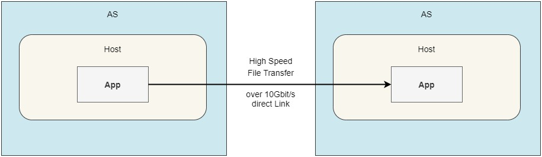
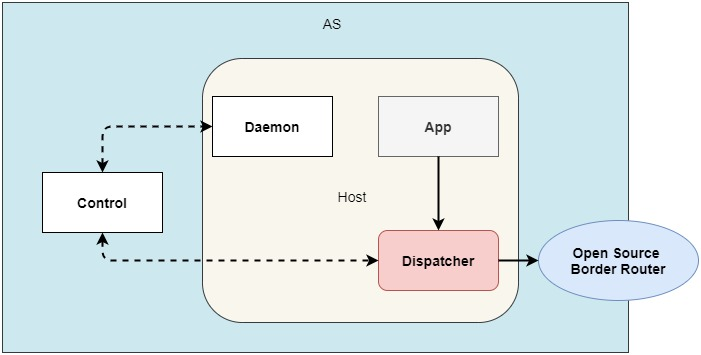
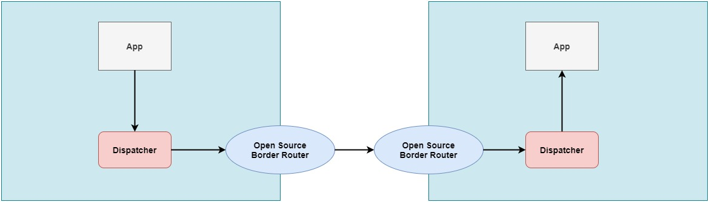
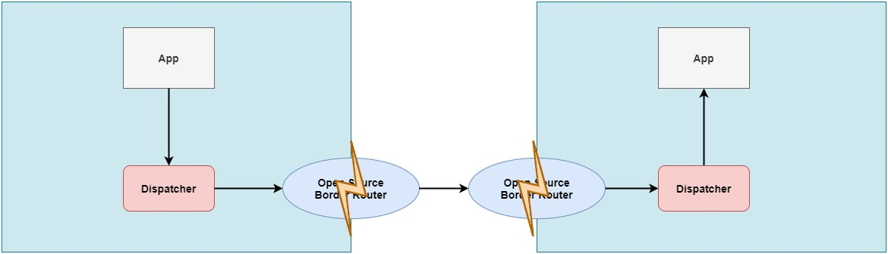
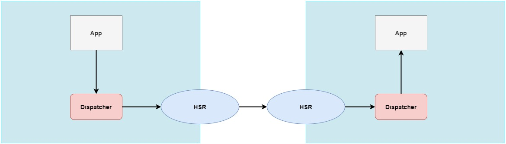
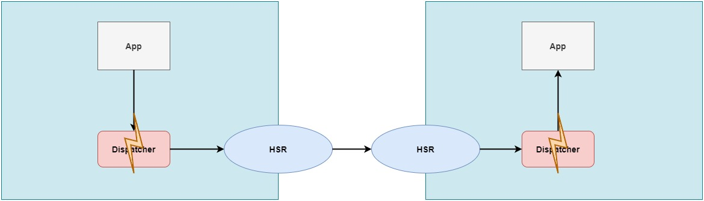
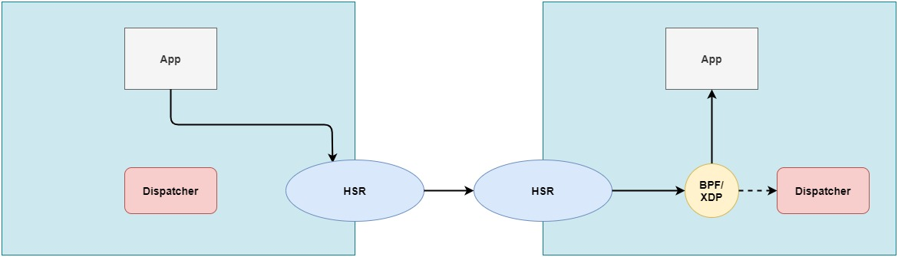
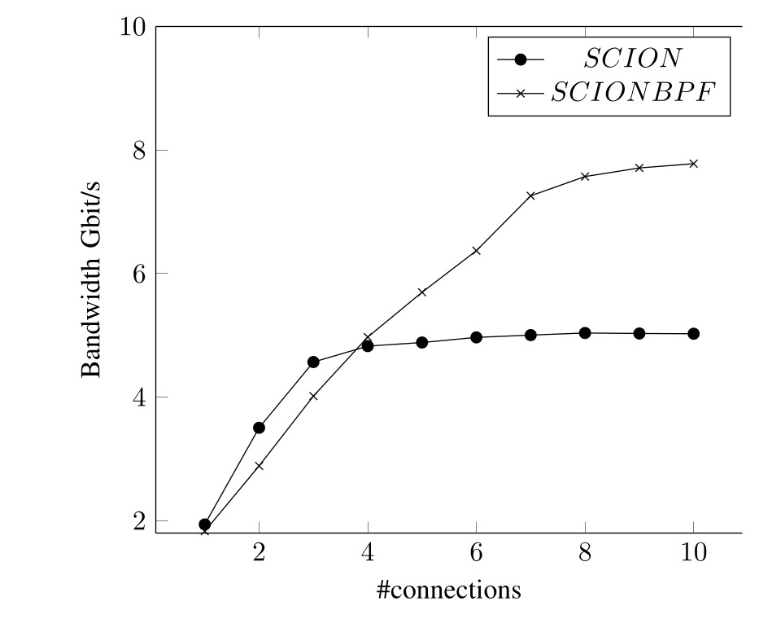

Your browser doesn't support the features required by impress.js, so you are presented with a simplified version of this presentation.
For the best experience please use the latest Chrome, Safari or Firefox browser.
SCION Performance Analysis:
High speed file transfer
Marten Gartner, Martin Koppehel, David Hausheer, Thorben Krüger
2021
Any element with the class="notes" will not be displayed. This can
be used for speaker notes. In fact, the impressConsole plugin will
show it in the speaker console!
Multipath Bittorrent over SCION
- As widely used file transfer protocol, Bittorrent was ported to run on SCION
- Supports Multipath to particular peers in the current implementation
- We aim to evaluate the implementation in small topologies with high performance links
In this slide, we don't even specify the relative position, rather
that too is inherited. So this slide will again be 1000px to the
right of the previous one.
Setup

- Target: Achieve 10Gbit/s bandwidth with Multipath Bittorrent over SCION
- Results: Achieved ~2Gbit/s bandwidth with Multipath Bittorrent over SCION
- With Bittorrent over TCP and parallel downloads ~8Gbit/s possible
Reminder: SCION AS/Host Structure

- Data packets start from app, traverse dispatcher and border router
File transfer: Data flow

- Data packets traverse 2 dispatchers and 2 border routers
- So where is the performance gone?
Bottleneck: Border Router?

- First assumption: Open source border router is the bottleneck
- Solution: Deploy the High Speed Router (HSR) of anapaya
Bottleneck: Border Router?

- Results: Slightly better, but not as good as expected
Bottleneck: Dispatcher?

- Second assumption: Additional bottleneck in the dispatcher
- Solution: Bypass the dispatcher?
What does the Dispatcher?
- Handles incoming and outgoing SCION packets on SCION hosts, does service resolution
- From design perspective very useful
- Last border router on path does not need to lokup l4 port
- Dispatcher keeps map of registered apps/services, redirects packets
- From performance perspective questionable
- All SCION data packets traverse the kernel 2x on each host
Bypassing the Dispatcher?
- First idea was to bypass the dispatcher, like hercules does
- This approach only works for particular apps
- Better: Adapt the dispatcher to improve all SCION apps
- Approach: Improve only the forwarding part
- Receiver: Let apps open "normal" UDP ports and rewrite the incoming packets using BPF/XDP
- Sender: Send SCION packets to nexthop underlay address (border router)
New SCION Data Flow

- Sending app sends directly to border router, which is the next hop in the path
- Receiver rewrites data packets (not control messages) to reach target destination port
First Results: Raw SCION/UDP

- Measurements done on 10Gbit/s link with HSR, Jumbo Frames and simple bandwidth tester
Next Steps:
- Fix SCION/QUIC packet sending (handshake error)
- Test with Multipath Bittorrent over SCION
- Investigate why single connections are limited to max 2Gbit/s
- Support multiple registered apps instead of port range
- Aim for bringing this prototype upstream once its a working application
Notes:
- Code changes for SCION can be found here: https://github.com/martenwallewein/scion/tree/feature/udp-listen-dial
- Code changes for SCION-Apps can be found here: https://github.com/martenwallewein/scion-apps/tree/feature/listen-udp
- XDP code is currently in a private repo, because we used code snippets from hercules for the prototype